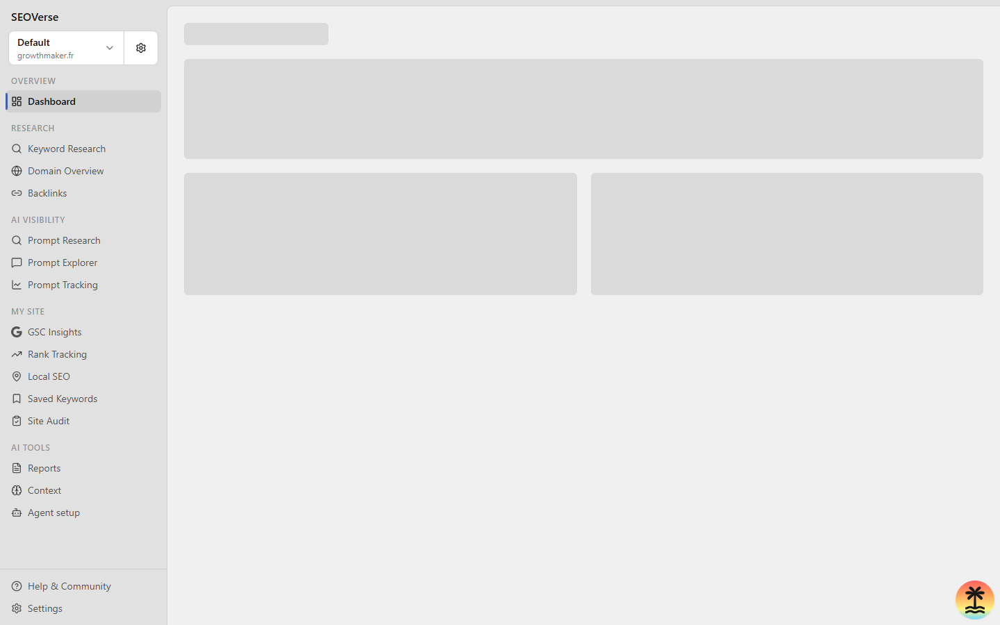

Developer-First SEO and AI Visibility
Open-source alternative to commercial SEO suites. Run organic research and autonomous AI agent skills locally with SQLite, or connect directly through the Model Context Protocol.
Verified Organic Engine Outputs
Inspect genuine views from the local development server. Explore comprehensive keyword clusters, crawl diagnostics, and AI citations.

Substantive Organic Capabilities
Designed to replace proprietary subscription lock-in with transparent, normalized SQL storage and autonomous agents.
Automated Keyword Clustering
Group thousands of related queries into structured topical authority pillars. Categorize search volumes, commercial intent, and SERP difficulty without paying for individual keyword credits.
Full-Spectrum Technical Auditing
Traverse internal link structures, test robots directives, diagnose redirect hops, and detect canonical errors. Identifies exact code fixes with line references for your engineering team.
Competitor Gap Analysis
Benchmark your domain against leading market alternatives. Discover high-converting search keywords your competitors rank for and identify high-authority backlink opportunities.
Generative Engine Optimization (GEO)
Audit and track how conversational LLMs answer questions in your industry. Understand citation frequency, detect competitor recommendations, and optimize content for AI overview inclusion.
Twelve Built-In AI Agent Skills
Executable skill routines that give Cursor, Claude Code, Antigravity, and Codex the exact procedures to research, audit, and optimize.
| Skill Command | Workflow Objective | Category |
|---|---|---|
/seo-audit |
Audit a website, investigate crawl issues, and deliver a prioritized recommendations report. | Auditing |
/keyword-research |
Discover seed opportunities, analyze search volumes, difficulty scores, and user intent. | Research |
/competitor-analysis |
Map a competitor organic footprint, top ranking URLs, content gaps, and backlinks. | Competitors |
/keyword-clustering |
Cluster related keywords by topical intent and map them into actionable content silos. | Research |
/link-prospecting |
Find prospective backlink opportunities, verify contacts, and draft contextual outreach. | Competitors |
/local-seo |
Audit Google Business Profiles and track geo-targeted rankings across local radius grids. | Auditing |
/seo-coach |
Interactive strategy guide providing tailored prioritization between quick wins and long-term bets. | Research |
/seo-report |
Generate executive-ready SEO performance reports in self-contained markdown and HTML. | Auditing |
/seo-project-setup |
Configure domain baselines, tracked competitors, target geographies, and seed keywords. | Auditing |
/ai-visibility-audit |
Track how often your brand is mentioned or cited in ChatGPT, Perplexity, and Gemini answers. | AI Visibility |
/ai-prompt-research |
Uncover prompts and queries that prospective customers ask conversational AI in your sector. | AI Visibility |
/competitive-landscape |
Macro-level competitive share comparison across multiple industry domains. | Competitors |
Developer Execution Workflow
Run everything on your own machine. From git clone to autonomous agent execution in four direct steps.
Initialize Local Repository and Database
Clone the repository, install dependencies with pnpm, and apply the SQLite migrations. No external paid subscription required.
git clone https://github.com/foverse/seoverse.git
cd seoverse
pnpm install
pnpm run db:migrate:local
pnpm run devCommon Questions
Practical details on self-hosting, data persistence, and agent integration.
How is SEOVerse different from Semrush and Ahrefs?
How does the Model Context Protocol (MCP) work here?
Can I run SEOVerse entirely offline?
How do I self-host SEOVerse in production?
What is Generative Engine Optimization (GEO)?
Own Your Organic Search Intelligence
Free and open-source under the MIT license. Full code transparency and zero telemetry.